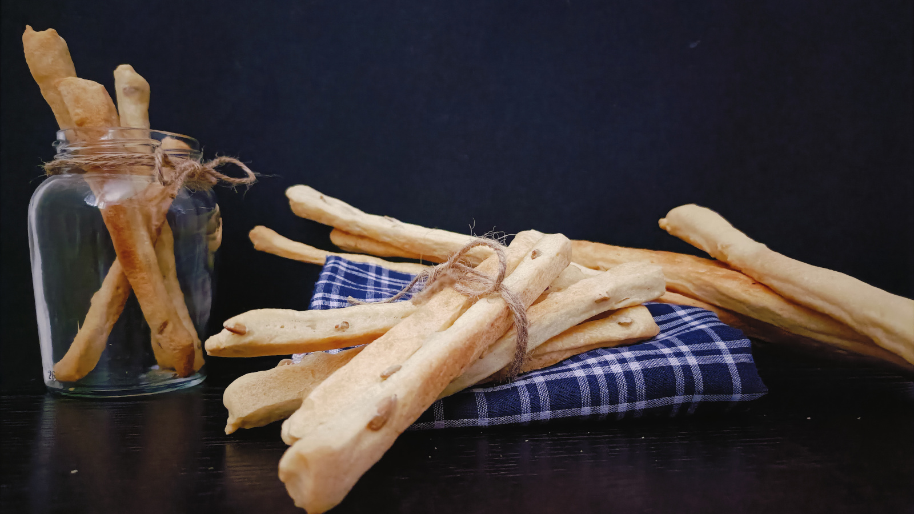

Rosquilletes Valencianes
- Preparación: 10 min
- Tiempo de levado: 1-2 h
- Horneado: 15 min
- Porciones: 30 - 35 rosquilletas
INGREDIENTES
- 2 ⅔ tazas (350 g) de harina de trigo de todo uso
- 2 ¼ cucharaditas (7 g) de levadura seca
- 1 cucharadita (6 g) de sal
- 3 ½ cucharadas (50 g) de aceite de oliva o girasol
- ¾ taza (200 g) de agua tibia
- 3 - 4 cucharadas de semillas de girasol peladas y crudas
DESCRIPCIÓN
Las rosquilletas valencianas son un delicioso aperitivo, muy saludable y fácil de preparar. Las más clásicas son las de pipas de girasol y las de pimentón dulce, aunque también suelen consumirse mucho las de chocolate. Una ventaja de esta receta es que con la misma masa pueden prepararse diferentes tipos si incorporamos el último ingrediente al final, con lo cual se resuelven las meriendas de varios días, pues quedan buenísimas con un buen vaso de leche o acompañadas de fruta.
INSTRUCCIONES
- En un recipiente profundo mezclar la harina, levadura y sal. Luego agregar el aceite, el agua tibia y las semillas de girasol. Amasar hasta obtener una mezcla homogénea.
- Volcar la masa sobre una superficie de trabajo ligeramente enharinada. Amasar por aproximadamente 10 minutos hasta obtener una masa tersa y elástica. Dar forma de bola y colocar la masa en un recipiente hondo ligeramente engrasado. Cubrir el recipiente con plástico y dejar levar la masa hasta que casi duplique su tamaño (entre una y dos horas).
- Cuando la masa haya levado, deshincharla suavemente y pasarla a la superficie de trabajo ligeramente enharinada. Ahora es momento de formar las rosquilletas. Se pueden hacer enrollando una por una, formando cilindros delgados de unos 20 cm de largo y unos 5 mm de diámetro. Personalmente prefiero hacerlo de otra forma, que es extender la masa sobre la superficie de trabajo con un rodillo, hasta que quede de unos 3 mm de grosor. Cortar tiras de unos 20 cm de largo y aproximadamente 1 cm de ancho. Cualquiera que sea la elección, deberían salir aproximadamente 35 rosquilletas, lo que puede variar si se hacen más largas. Lo importante es que queden delgadas para lograr que al hornearse queden crujientes.
- Transferir las rosquilletas a una bandeja de horno cubierta con papel para hornear, dejando un espacio entre las rosquilletas de unos 2 cm. Cubrir con plástico y dejar levar aproximadamente 30 minutos. Casi pasado este tiempo, precalentar el horno a 225 °C (437 °F).
- Hornear las rosquilletas 15 minutos o hasta que se vean doradas. Sacar del horno cuidadosamente y dejar enfriar totalmente sobre una rejilla. Dependiendo del tamaño de la bandeja, es muy posible que se tengan que hornear en varias rondas o usar varias bandejas.
Notas
- Esta receta puede adaptarse a diferentes gustos con gran facilidad. En lugar de pipas de girasol se pueden utilizar otros ingredientes, como pipas calabaza, ajonjolí, o cacahuetes triturados, o combinaciones de estos. Tambien quedan muy buenas con queso y hierbas de olor, o con pimentón dulce y pimienta de cayena. Otra opción es hacerlas con un toque dulce, usando chispas de chocolate o canela con un poco de azúcar. Las posibilidades son muchas y la preparación es la misma.